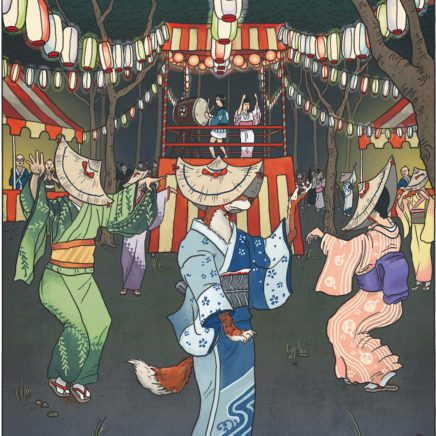

Kitsune
Translation: Fox
Habitat: Found throughout Japan, especially in forests and mountains.
Diet: Omnivorous, though often associated with a fondness for fried tofu.
Appearances:
Foxes, or kitsune, are found all across Japan. They are identical to wild foxes found elsewhere in the world apart from their incredible magical powers. Their cute faces and small size make them particularly loved by most people.
Behaviour:
There are two major variations of Kitsune.
Holy Foxes
Holy foxes are servants of the Shinto deity Inari, and Inari's shrines are decorated with statues and images of these foxes.
Legends tell of celestial foxes providing wisdom or service to good and pious humans.
These holy foxes act as messengers of the gods and mediums between the celestial and human worlds. They often protect humans or places, provide good luck, and ward evil spirits away.
Wild Foxes
Wild foxes are those which delight in mischief, pranks, or evil. There are stories in which wild foxes trick or even possess humans, and cause them to behave strangely. Despite this wicked nature, even wild foxes keep their promises, remember friendships, and repay any favors done for them.
Interactions:
Kitsunes vex their targets by creating phantom sounds and sights, stealing from them, or otherwise humiliating them publicly.
Certain mental disorders have been attributed to possession by kitsune (known as 狐憑き kitsunetsuki).
Mysterious illusory fires and strange lights in the sky are said to be caused by their magic, and are known as 狐火 kitsunebi, or “fox fire.”
Jorōgumo

Translation: entangling bride; alternatively whore spider
Habitat: cities, towns, rural areas, forests, and caves
Diet: young, virile men
Appearances:
Foxes, or kitsune, are found all across Japan. They are identical to wild foxes found elsewhere in the world apart from their incredible magical powers. Their cute faces and small size make them particularly loved by most people.
Behaviour:
There are two major variations of Kitsune.
Holy Foxes
Holy foxes are servants of the Shinto deity Inari, and Inari's shrines are decorated with statues and images of these foxes.
Legends tell of celestial foxes providing wisdom or service to good and pious humans.
These holy foxes act as messengers of the gods and mediums between the celestial and human worlds. They often protect humans or places, provide good luck, and ward evil spirits away.
Wild Foxes
Wild foxes are those which delight in mischief, pranks, or evil. There are stories in which wild foxes trick or even possess humans, and cause them to behave strangely. Despite this wicked nature, even wild foxes keep their promises, remember friendships, and repay any favors done for them.
Interactions:
Kitsunes vex their targets by creating phantom sounds and sights, stealing from them, or otherwise humiliating them publicly.
Certain mental disorders have been attributed to possession by kitsune (known as 狐憑き kitsunetsuki).
Mysterious illusory fires and strange lights in the sky are said to be caused by their magic, and are known as 狐火 kitsunebi, or “fox fire.”